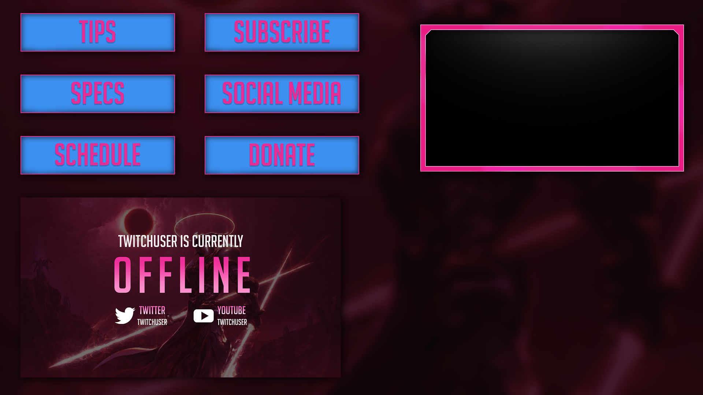
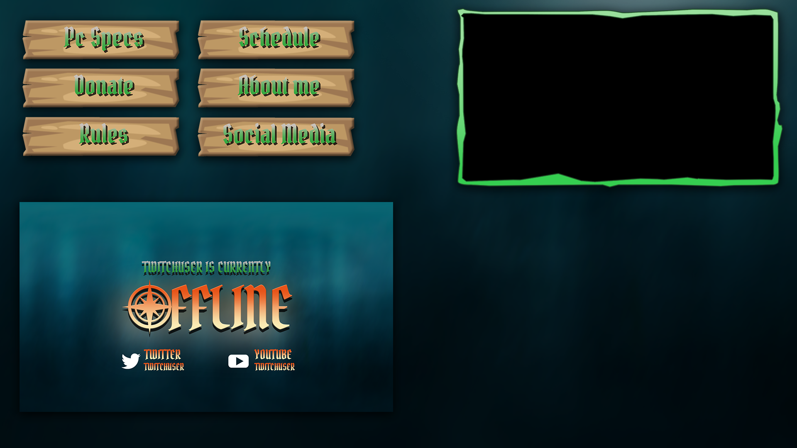

Liam Doherty
Game Developer
Overview
I create twitch designs and animation packages in a freelancing capacity, offering my services on fiverr.
Overlay Packages
You can find my gig for this service here. I like to create many fantasy designs but also really love sci-fi style twitch designs. This package usually consists of twitch panel buttons, offline screen and a webcam design.


Animated Alerts
You can find my gig for this service here. To create these kind of custom alerts I use code to give extra control over the alert text. There are many advantage of using coded alerts, such as lots of control over the placement of the text, allowing me to animate the movement of the text. Text can also be scaled to ensure that it will always fit within the alert bounding box.
© Liam Doherty
All content and trademarks property of their respective owners.